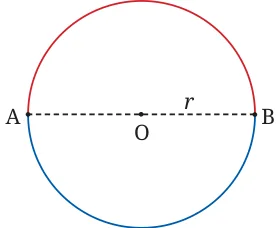
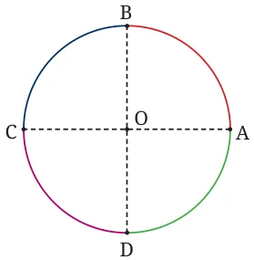
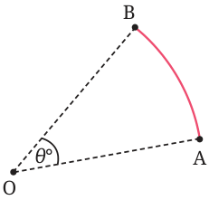
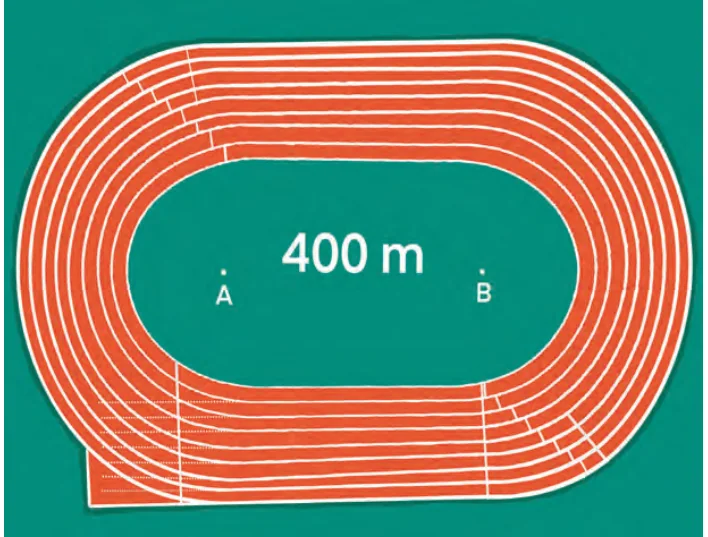

Instead of reflecting the figure in the diameter AB, we can also imagine rotating the whole figure around the centre O through an angle of \(180 ^{\circ}\) , i.e., through a half-turn. The effect is the same, and we get the same formula for the length of the semicircular arc.

Note the following:
- •The formula for the length of a semicircle may also be written
as \(2 \pi r \times \frac{180o}{360o}\) .
- •The formula for the length of a quarter circle may also be written
as \(2 \pi r \times \frac{90o}{360o}\) .
From these, we can guess the formula for the length of an arc of a circle in terms of the angle it makes (i.e., the angle it ‘subtends’) at the centre of the circle.

If the arc is AB, and it subtends an angle θ \(^{\circ}\) at the centre O of the circle, the length of the arc is \(2 \pi r \times \frac{θ ^{\circ} }{360 ^{\circ}\) } .
A Closer Look at a 400 m Athletics Track

Fig. 6.11 depicts a 400 m athletics track. You can see two straight sections of length 84.39 m each, and two curved portions, which are semicircles with a common centre (points A and B); the innermost semicircle on each side has radius 36.5 m. The width of each lane is 1.22 m. Let an athlete make one complete circuit of the track. What is the total distance she runs?
- •Let us assume that she runs at a distance of 0.3 m from the inner
border.
- •She runs two straight sections of length 84.39 m each, a total of
168.78 m.
- •She also runs two semicircles of radius \((36.5 + 0.3) m\), i.e., 36.8 m.
- •The two semicircles together make up a complete circle.
- •Its circumference is \(2 \times \pi \times 36.8 = 2 \times 3.1416 \times 36.8 = 231.22 m\).
- •The total distance run by the athlete is therefore \(168.78 + 231.22\)
\(= 400 m\).
Now consider two runners, one in the innermost lane, the other in the second lane. On the straight stretch the two runners run the same distance. But on the curved portions the runner in the second lane runs a greater distance, because her semicircle has a larger radius. It is to compensate for this that staggers are needed.
Think and Reflect
What is the difference in radius between the first and second lanes? Use the Fig. 6.11 to find the stagger needed by the runner in the second lane. Will an equal stagger be needed between the third and second lanes?